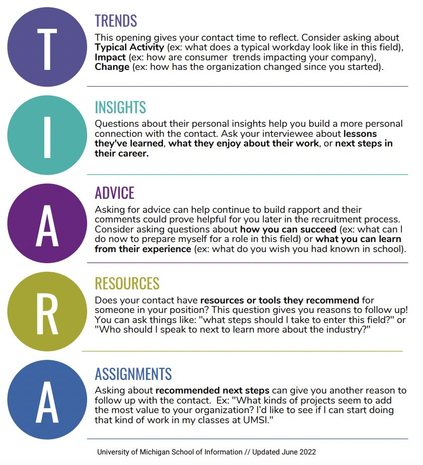

Expanding your Network
Building strong professional connections is essential to unlocking career opportunities and expanding your industry knowledge. Whether you’re just beginning to develop your network or looking to strengthen your current relationships, these resources are designed to support you at every stage.
UMSI students are uniquely positioned to connect with leading professionals in the field, and a thoughtful, strategic networking plan will help you make the most of these opportunities. On this page, you’ll find practical tips, outreach templates, and step-by-step guides—all curated specifically for School of Information students and aligned with the expectations of today’s employers and industry leaders.
Need resources? Refer to the sections below.
Building a Strategic Networking Plan
A well-thought-out networking plan can help you connect with the right people, make a lasting impression, and open doors to new opportunities. Here are some steps to get you started:
Outreach Messages
-
[Handout] Networking Outreach Email Examples:
An effective email format for networking outreach emails. -
Networking Email Templates from Resume World:
A variety of templates for different networking scenarios, including emails, interviews, and more!! -
Lettersmith Quick Reference Guide:
A step-by-step guidance to the professional langugage tool -
[Watch this Video!] Lettersmith: Support Tool for Professional Communication:
A video tutorial on how to use the Lettersmith tool for crafting professional messages.
Planning an Informational Interview
Need help planning for your Interview? Check out these resources!
-
Informational Methods using the Tiara Method
This workshop is aimed to help students with varying levels of experience with informational interviews. We hope you take from it what helps you the most.
If you’re an experienced informational interviewer, the TIARA method could be what you need to improve your Q&A during an interview. If you’re new to informational interviewing, it could help you prepare for and conduct your first one. I would encourage you to think about what next steps you will take in your career plan as we go through the workshop. -
[Handout] Informational Interviews - TIARA Method.pdf
Learn the Tiara method framework to help you prepare your questions and come prepared.
Here's an overview: Download the PDF for your own reference

Practice your interview pitch with a CDO Career Coach: Book an appointment here:.
Career Fair Preparation
Checklist of what to do before you go
-
Know Before You Go: Event Details
Date, time, location (virtual or in-person), and registration requirements. Link to Career Fair page or map -
Research Employers: Search them up
Identify companies attending, review their websites, and note any job openings or internship opportunities that align with your interests and skills. -
Polish Your Materials: Be prepared to show them
Update your resume, prepare a digital portfolio if applicable, and have business cards ready if you have them. -
Professional Appearance: Be put together
Follow dress code guidelines, typically business casual or professional attire. -
During the Fair: Be ready to talk
Prepare a brief introduction about yourself, your background, and what you’re looking for. Be ready to ask thoughtful questions about the companies and roles. Take notes and collect business cards for follow-up.